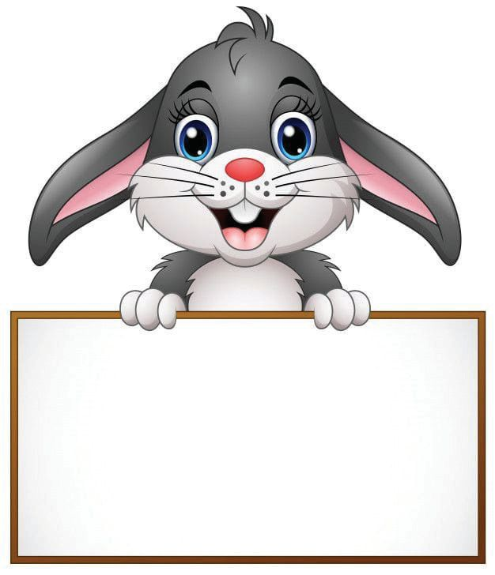
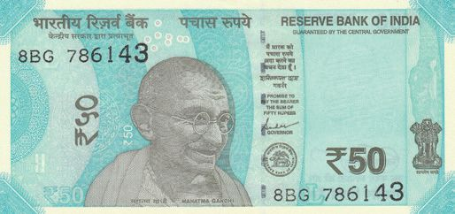
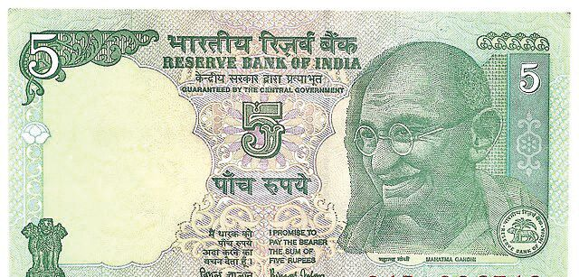
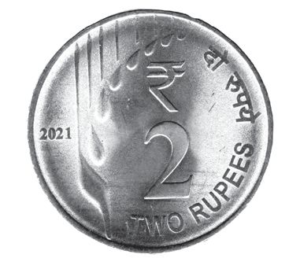

6
കുറയുന്ന കൂട്ടം

6
കുറയുന്ന കൂട്ടം


ഗണിതം സ്റ്റാൻഡേർഡ് - IV
അബാക്കസ് അബാക്കസ് ഉണ്ടാക്കി കളിക്കുകയാണ് കിച്ചുവും കൂട്ടുകാരുംം.
ഏറ്റവും വലിയ മൂന്നക്ക സംഖ്യയ യാണല്ലോോ
ഇതാണ് എന്റെ അബാക്കസ്
അബാക്കസിലെ സംഖ്യയ എന്താണ് ?
ഈ സംഖ്യയയിൽ നിന്നും എത്ര കുറച്ചാൽ ഏറ്റവും ചെറിയ മൂന്നക്ക സംഖ്യയ കിട്ടുംം ?
കുറച്ച് കിട്ടിയ സംഖ്യയ അബാക്കസിൽ വരയ്ക്കൂ. പൂരിപ്പിക്കൂ... 99 – 10 = ............. 999 – 100= .............
നൂറ് 78
പത്ത്
ഒന്ന്
9999 – 1000 = .............


കുറയുന്ന കൂട്ടം
കുറച്ചുനോാക്കാം
ഏറ്റവും വലിയ മൂന്നക്ക സംഖ്യയയിൽ നിന്ന് ഏറ്റവും വലിയ രണ്ടക്ക സംഖ്യയ കുറച്ചാൽ എത്ര കിട്ടുംം?
340 ൽ നിന്നും 120 കുറച്ചാൽ എത്രയാകും?
കിച്ചുവിന്റെ ഉത്തരം നോാക്കൂ... 34 പത്തിൽ നിന്നും 12 പത്ത് കുറച്ചാൽ മതി. 34 പത്ത് – 12 പത്ത് =
പത്ത് =
16 പത്തിനോാട് എത്ര പത്ത് കൂട്ടിയാൽ 34
340 ൽ നിന്നും 160 കുറയ്ക്കണമെങ്കിലോാ?
ചെയ്തുനോാക്കൂ...
പത്ത് കിട്ടുമെന്ന് കണക്കാക്കിയാലും മതി.
346 ൽ നിന്നും 162 കുറച്ചാലോാ?
രീതി : 1
162 നോാട് എത്ര കൂട്ടിയാൽ 346 കിട്ടുമെന്ന് കണക്കാക്കിയാലും മതി.
162
+ 8
=
170
146 + 30 + 8
=
140 + 6 + 30 + 8
170
+ 30
=
200
=
140 + 30 + 14
200
+ 146
=
346
=
170 + 14
=
184
രീതി : 2 346
→ 300 + 40 + 6 –
162
→ 100 + 60 + 2
ഇതിനെ മാറ്റി എഴുതിയാൽ 346 162
→ 200 + 140 + 6 – → 100 + 60 + 2
100 + 80 + 4
346 - 162 = 184
നൂറ്
പത്ത്
ഒന്ന്
3
4
6
1
6
2
–
ഇങ്ങനെ മാറ്റി എഴുതാം. നൂറ്
പത്ത്
ഒന്ന്
2
14
6
1
6
2
ഇങ്ങനെയും എഴുതാം. –
346 – 162 184
79

ഗണിതം സ്റ്റാൻഡേർഡ് - IV
കിച്ചു അബാക്കസിൽ ഉണ്ടാക്കിയ സംഖ്യയ 876 ആണ്. ചിപ്പി ഉണ്ടാക്കിയത് 697 ആണ്. ചിപ്പിയുടെ സംഖ്യയയെക്കാൾ എത്ര കൂടുതലാണ് കിച്ചുവിന്റെ സംഖ്യയ?
നിങ്ങളുടെ കൈയിൽ 13 മുത്തുകളുണ്ട്. അവ ഉപയോാഗിച്ച് അബാക്കസിൽ ഉണ്ടാക്കാവുന്ന ഏറ്റവും വലിയ മൂന്നക്ക സംഖ്യയയും ഏറ്റവും ചെറിയ മൂന്നക്ക സംഖ്യയയും എഴുതുക. അവ തമ്മിലുള്ള വ്യയത്യാസം എത്രയാണ് ? വലിയ മൂന്നക്ക സംഖ്യയ ചെറിയ മൂന്നക്ക സംഖ്യയ വ്യയത്യാസം
ശരിയായ ഉത്തരം ഏതാണ് ?
761 – 380 ഏതൊാക്കെ സംഖ്യയകൾക്കിടയിലാണ് ?
i) 400 നും 500 നും ഇടയിൽ ii) 400 നും 420 നും ഇടയിൽ
80
കുറച്ചുനോോക്കാം 8–1 = 7
iii) 380 നും 400 നും ഇടയിൽ
88 – 11 = ............
iv) 350 നും 380 നും ഇടയിൽ
888 – 111= ............
എൻ്റെ ഉത്തരം
8888 – 1111= ............


കുറയുന്ന കൂട്ടം
കണ്ടുപിടിക്കാം... സമ്മാനം നേടാം... ഇന്നത്തെ കളിയിൽ കിച്ചുവിനും കൂട്ടുകാർക്കും ഒപ്പം കിച്ചുവിൻ്റെ ചേച്ചി അമ്മുവും കൂടി.
എല്ലാവർക്കും ഞാൻ സമ്മാനം തരാം. സമ്മാനം എങ്ങനെ കിട്ടുംം?
സമ്മാനം കിട്ടാനുള്ള വഴി ആൽമരച്ചുവട്ടിലുണ്ട്.
ആൽമരച്ചുവട്ടിൽ ഒരു കടലാസ് ഉണ്ടല്ലോോ.
3542 നോോട്
എത്ര കൂട്ടിയാൽ 3798 കിട്ടുംം?
81


ഗണിതം സ്റ്റാൻഡേർഡ് - IV
ഇങ്ങനെയും എഴുതാം. 3542 + 8
=
3550
3550 + 50
=
3600
3600 + 100
=
3700
3700 + 98
=
3798
ആയിരം നൂറ്
8 + 50 + 100 + 98
= 100 + 98 + 58
= 100 + 98 + 2 + 56
= 100 + 100 + 56
= 256
പത്ത്
ഒന്ന്
3
7
9
8
3
5
4
2
2
5
6
സമ്മാനം കിട്ടാനുള്ള അടുത്ത സൂചന വീടിന്റെ മുറ്റത്തുണ്ട്.
മറ്റേതൊൊക്കെ രീതിയിൽ കണക്കാക്കാം ?
5849 ഉം 2617 ഉം
തമ്മിലുള്ള വ്യയത്യാസം എത്രയാണ്? ആയിരം നൂറ്
82
പത്ത്
ഒന്ന്
5
8
4
9
2
6
1
7


കുറയുന്ന കൂട്ടം
കിട്ടിയ സംഖ്യയ ഉത്തരമായി വരുന്ന ചോോദ്യംം എഴുതുന്നവർക്ക് സമ്മാനം കിട്ടുംം.
ഞാൻ എഴുതിയത് • ......... ആയിരം ......... നൂറ് ......... പത്ത് ......... ഒന്ന് എന്നിവ ചേരുന്ന സംഖ്യയ എന്താണ് ? • ......... , ......... എന്നിവ കൂട്ടുമ്പോോൾ കിട്ടുന്ന സംഖ്യയ എന്താണ് ?
കൂടുതൽ ചോാദ്യയങ്ങൾ എഴുതൂ... • • •
സമ്മാനം
വ്യയത്യാസം അബാക്കസിൽ കാണിച്ചാലോോ?
2837ന്റെയും 524ന്റെയും വ്യയത്യാസം എത്രയാണ് ?
എല്ലാവർക്കും അബാക്കസ് സമ്മാനം.
ആയിരം
നൂറ്
പത്ത്
ഒന്ന്
83

ഗണിതം സ്റ്റാൻഡേർഡ് - IV
കണക്കുപെട്ടി കണക്കുപെട്ടിയിലെ സമചതുരക്കൂട്ടങ്ങളുമായി കൂട്ടുകാർക്കൊൊപ്പം കളി ക്കാൻ കിച്ചു ആൽമരച്ചുവട്ടിൽ എത്തി. ചിത്രം നോോക്കൂ...
ഇതിൽ എത്ര ആയിരമുണ്ട് ?
പസിൽ കോർണർ
എത്ര നൂറുണ്ട് ?
ഞാൻ അയ്യായിരത്തിനും എണ്ണായിരത്തിനും ഇടയിലാണ്. ഇരട്ടസംഖ്യയയാണ്. തുടർച്ചയായ 4 അക്കങ്ങളാണ്. ഞാനാര് ?
എത്ര പത്തുണ്ട് ? എത്ര ഒന്നുണ്ട് ? സംഖ്യയ എന്താണ്? ഇതിൽ 1251 സമചതുരങ്ങൾക്ക് മിന്നി നിറം നൽകി. 84

കുറയുന്ന കൂട്ടം
നിറം നൽകൂ നിങ്ങളുംം 1251 സമചതുരങ്ങൾക്ക് നിറം കൊൊടുക്കൂ.
നൂറിന്റെ ഒരു സമ ചതുരക്കൂട്ടത്തെ 10 ന്റെ 10 എണ്ണമാക്കിയല്ലോോ.
നിറം കൊൊടുക്കാത്ത സമചതുരങ്ങളിൽ ആയിരം നൂറ് പത്ത് ഒന്ന് ആയിരത്തിന്റെ എണ്ണം 2 3 4 3 നൂറിന്റെ എണ്ണം
1
2
5
1
പത്തിന്റെ എണ്ണം ഒന്നിന്റെ എണ്ണം സംഖ്യയ ?
കുറയ്ക്കാം സമചതുരക്കൂട്ടങ്ങൾ ഉപയോോഗിച്ച് 3625ൽ നിന്നും 1812 കുറയ്ക്കുക.
ഇങ്ങനെ മാറ്റി എഴുതാം. ആയിരം
നൂറ് പത്ത് ഒന്ന്
2
2
14
3
1
2
5
1
...........
........
..........
........
വ്യയത്യാസം കണക്കാക്കിയ രീതി നോാട്ടുബുക്കിൽ എഴുതൂ... 85


ഗണിതം സ്റ്റാൻഡേർഡ് - IV
വൈദ്യുുതിബില്ല് ഇത്തവണ റീഡിങ് കൂടുതലാണ്.
അപ്പോാൾ തുകയും കൂടുമല്ലോാ. ആവശ്യം കഴിഞ്ഞാൽ സ്വിച്ച് ഓഫ് ചെയ്യണം.
കിച്ചുവിന്റെ വീട്ടിലെ ഈ മാസത്തെ വൈദ്യുുതി റീഡിങ് 4526. മുൻ റീഡിങ് 3845. കിച്ചുവിന്റെ വീട്ടിലെ വൈദ്യുുതി ഉപയോോഗം കണക്കാക്കിയ രീതി നോോക്കൂ...
രീതി - 1
526
4526 – 3845 100 50 5 3845
3850
3900
5 + 50 + 100 + 526 = 681
86
4000
4526


കുറയുന്ന കൂട്ടം
രീതി - 2 4000 + 500 + 3000 + 800 +
20 + 6 40 + 5
4000 + 400 + 120 + 6 3000 + 800 + 40 + 5
സംഖ്യയ ആയിരം നൂറ് പത്ത്
ഒന്ന്
4526
3
14
12
6
3845
3
8
4
5
6
8
1
3000 + 1400 + 120 + 6 3000 + 800 + 40 + 5 600 +
80 + 1
4526 – 3845
ഇങ്ങനെയും എഴുതാം. 3
4526 – 3000 = 1526 1526 – 800 =
726
726
681
–
45 =
14
12
4 5 2 6 3 8 4 5 6 8 1
മീറ്റർ റീഡിങ് കിച്ചുവിന്റെ കൂട്ടുകാരുടെ വീടുകളിലെ മീറ്റർ റീഡിങ് ചുവടെ തന്നിരിക്കുന്നു. പട്ടിക പൂർത്തിയാക്കുക. പേര്
മീറ്റർ റീഡിങ് ഫെബ്രുവരി ഏപ്രിൽ
2 മാസത്തെ വൈദ്യുുതി ഉപയോോഗം
ചിപ്പി
4215
4826
....................
ജീന
....................
5278
400
ഫാരിസ്
6970
7340
....................
മിന്നി
5870
....................
395
ഏറ്റവും കൂടുതൽ വൈദ്യുുതി ഉപയോോഗിച്ചത് ആരുടെ വീട്ടിലാണ് ? നിങ്ങളുടെ വീട്ടിലെ ഈ മാസത്തെ വൈദ്യുുതി റീഡിങ് എത്രയാണ് ? 87



ഗണിതം സ്റ്റാൻഡേർഡ് - IV
സർക്കസ് അച്ഛാ നമുക്കിന്ന് സർക്കസ് കാണാൻ പോോയാലോോ?
വൈകുന്നേരം പോോകാം
ടിക്കറ്റ് നിരക്ക് കുട്ടികൾക്ക് 90 രൂപ മുതിർന്നവർക്ക് 180 രൂപ
88


കുറയുന്ന കൂട്ടം
കിച്ചുവും കുടുംംബവും സർക്കസ് കൂടാരത്തിലെത്തി ടിക്കറ്റെടുത്തു. 4 പേരുടെ ടിക്കറ്റിന് എത്ര രൂപയായി?
അഞ്ഞൂറ് രൂപയുടെ രണ്ടുനോോട്ട് കൗൗണ്ടറിൽ കൊൊടുത്തു. ബാക്കി എത്ര രൂപ കിട്ടി?
രീതി - 1 1000 –
540
540
+
60
600
+
400 = 1000
60
+
400 = 460
= 600
രീതി - 3
= 999 – 539 = 460
1
540
1000 –
500 = 500
–
1000 – 540 = (1000 – 1) – (540 –1)
ആയിരം
1000 – 500
രീതി - 2
40
= 460
ആയിരം
..........
ഇങ്ങനെയും എഴുതാം. 1000 540 460
നൂറ് പത്ത് ഒന്ന് 0
0
0
5
4
0
നൂറ് പത്ത് ഒന്ന് 9
10
0
5
4
0
......
.......
.......
1000 – 100 = 900 1000 – 500 = ............ 1000 – 250 = ............ 1000 – 820 = ............ 1000 – 990 = ............
89






ഗണിതം സ്റ്റാൻഡേർഡ് - IV
നോാട്ടുകൾ... നാണയങ്ങൾ... സർക്കസ് കാണാൻ പോായപ്പോാൾ ബാക്കി കിട്ടിയ രൂപ നോോട്ടുകളായും നാണയങ്ങളായും എഴുതുക.
എത്ര നോോട്ടുകൾ? എത്ര നാണയങ്ങൾ? 100 രൂപ നോോട്ടുകളുംം 10 രൂപ നോോട്ടുകളുംം മാത്രമായിരുന്നെങ്കിൽ എത്ര നോോട്ടുകൾ കിട്ടുമായിരുന്നു?
ഈ തുക 10 നോോട്ടുകളാക്കി കൊൊടുക്കാൻ ഏതൊൊക്കെ നോോട്ടുകൾ, എത്ര വീതം എടുക്കണം?
90


കുറയുന്ന കൂട്ടം
സമ്പാദ്യംം ഇന്ന് കളിനോോട്ടുകൾ കൊൊണ്ട് കളിച്ചാലോോ?
ഞാൻ റെഡി...
കിച്ചുവും മിന്നിയും കളിനോോട്ട് ഉപയോോഗിച്ച് ബാങ്ക് കളിക്കുകയാണ്. പാസ്ബുക്കിൽ എഴുതിയ സംഖ്യയകൾ നോോക്കൂ.
പേര് : കിച്ചു നിലവിലുള്ളത്
പിൻവലിച്ചത്
തീയതി
തുക
തീയതി
തുക
14.10.2025
5484
14.10.2025
3295
കിച്ചുവിന്റെ സമ്പാദ്യയ ത്തിൽ നിന്നും 3295 രൂപ പിൻവലിച്ചു. ബാക്കി എത്ര രൂപ ഉണ്ട് ?
484 ൽ നിന്നും 300 കുറച്ച് 5
രീതി - 1 5484 − 3295
കൂട്ടിയാലും മതിയല്ലോോ.
489ൽ നിന്നും 300 കുറച്ചാലും
ഉത്തരം ശരിയാണ്.
5000 − 3000 = 2000 484 − 300
= 184
484 − 295
= 184 + 5 = 189
2000 + 189 = 2189
91

ഗണിതം സ്റ്റാൻഡേർഡ് - IV
രീതി - 2 5484 − 3295
മറ്റൊാരു രീതി
ഞാൻ കണക്കാക്കിയ രീതി
മിന്നിയുടെ പാസ്ബുക്ക് നോോക്കി അക്കൗൗണ്ടിൽ ബാക്കിയുള്ള തുക കണക്കാക്കൂ...
പേര് : മിന്നി
നിലവിലുള്ളത്
പിൻവലിച്ചത്
തീയതി
തുക
തിയതി
തുക
14.10.2025
4971
14.10.2025
2784
മിന്നിയുടെ സമ്പാദ്യയത്തിൽ നിന്നും 2784 രൂപയാണ് പിൻവലിച്ചതെങ്കിൽ ബാക്കിയുള്ള രൂപ ഞാൻ കണക്കാക്കിയ രീതി
പസിൽ കോർണർ
മറ്റൊാരു രീതി
സംഖ്യയ എന്താണ് ?
ഒരു നാലക്കസംഖ്യയയോാട് 6349 കൂട്ടിയപ്പോാൾ 8778 കിട്ടി. സംഖ്യയ എന്താണ് ?
92


കുറയുന്ന കൂട്ടം
കച്ചവടക്കളി പിറ്റേ ദിവസം കൂട്ടുകാർ ആൽമരച്ചുവട്ടിൽ കടയൊൊരുക്കി. പിൻവലിച്ച തുകയുമായി മിന്നിയും കിച്ചുവും കടയിലെത്തി.
ഷൂസ് - 800 രൂപ ബാറ്റ് - 1400 രൂപ സൈക്കിൾ - 8999 രൂപ ഫുട്ബോോൾ - 950 രൂപ ബാഗ് - 950 രൂപ കുട - 420 രൂപ മൊൊബൈൽ ഫോോൺ - 2500 രൂപ
കടയിൽ നിന്നും വാങ്ങിയവ
കിച്ചു
മിന്നി
ഷൂസ് ഫുട്ബോോൾ ബാഗ്
ബാറ്റ് കുട
സാധനം വാങ്ങിയശേഷം കിച്ചുവിന്റെ കൈയിൽ എത്ര രൂപ ബാക്കിയുണ്ട് ? മിന്നിയുടെ കൈയിലോാ ? കിച്ചുവിന്റെ കൈയിൽ ബാക്കിയുള്ള തുക
മിന്നിയുടെ കൈയിൽ ബാക്കിയുള്ള തുക
93

ഗണിതം സ്റ്റാൻഡേർഡ് - IV
ജീനയ്ക്ക് സൈക്കിൾ വാങ്ങണം. ജീനയുടെ കൈയിൽ 4275 രൂപയുണ്ട്. ഇനിയെത്ര രൂപ കൂടി വേണം ? സൈക്കിളിന്റെ വില ഞാൻ കണക്കാക്കിയ രീതി
1. അടുത്ത മൂന്ന് സംഖ്യയകൾ എഴുതൂ.
6772, 6572, 6372,
,
,
2365, 2254, 2143,
,
,
5368, 5438, 5508,
,
,
2. കിച്ചുവിന്റെ വീട്ടിൽ ഒരു മാസത്തെ പലചരക്ക് വാങ്ങിയപ്പോാൾ 5372 രൂപയായി. കൈയിലുള്ള 3685 രൂപ കൊാടുത്തു. ബാക്കി തുക യു.പി ഐ. വഴിയാണ് കൊാടുത്തത്. ഈ തുക എത്രയാണ് ? 3. 8 ആയിരവും 27 പത്തും 5 ഒന്നും ചേർന്ന സംഖ്യയയിൽ നിന്നും 43 നൂറുംം 57 പത്തും ചേർന്ന സംഖ്യയ കുറയ്ക്കുക. 4. നിങ്ങളുടെ കൈയിൽ 18 മുത്തുകളുണ്ട്. ഇവ ഉപയോാഗിച്ച് അബാ
ക്കസിൽ ഉണ്ടാക്കാവുന്ന ഏറ്റവും വലിയ നാലക്ക സംഖ്യയയും ഏറ്റവും ചെറിയ നാലക്ക സംഖ്യയയും എഴുതുക. ഇവ തമ്മിലുള്ള വ്യയത്യാസം എത്രയാണ് ?
94

ഭാരതത്തിന്റെ ഭരണഘടന ഭാഗം IV ക
മൗലികകർത്തവ്യയങ്ങൾ 51 ക. മൗലികകർത്തവ്യയങ്ങൾ - താഴെപ്പറയുന്നവ ഭാരതത്തിലെ ഓരോോ പൗൗരന്റെയും കർത്തവ്യം ആയിരിക്കുന്നതാണ് : (ക)
ഭരണഘടനയെ അനുസരിക്കുകയും അതിന്റെ ആദർശങ്ങളെയും സ്ഥാപനങ്ങ ളെയും ദേശീയപതാകയെയും ദേശീയഗാനത്തെയും ആദരിക്കുകയും ചെയ്യുക;
(ഖ) സ്വാതന്ത്ര്യയത്തിനുവേണ്ടിയുള്ള നമ്മുടെ ദേശീയസമരത്തിന് പ്രചോോദനം നൽകിയ മഹനീയാദർശങ്ങളെ പരിപോോഷിപ്പിക്കുകയും പിൻതുടരുകയും ചെയ്യുക; (ഗ)
ഭാരതത്തിന്റെ പരമാധികാരവും ഐക്യയവും ‑‑‑അഖണ്ഡതയും നിലനിർത്തുകയും സംരക്ഷിക്കുകയും ചെയ്യുക;
(ഘ) രാജ്യയത്തെ കാത്തുസൂക്ഷിക്കുകയും ദേശീയസേവനം അനുഷ്ഠിക്കുവാൻ ആവശ്യയ പ്പെടുമ്പോോൾ അനുഷ്ഠിക്കുകയും ചെയ്യുക; (ങ) മതപരവും ഭാഷാപരവും പ്രാദേശികവും വിഭാഗീയവുമായ വൈവിധ്യയങ്ങൾക്കതീ തമായി ഭാരതത്തിലെ എല്ലാ ജനങ്ങൾക്കുമിടയിൽ, സൗൗഹാർദവും പൊൊതുവായ സാഹോോദര്യയമനോോഭാവവും പുലർത്തുക, സ്ത്രീകളുടെ അന്തസ്സിന് കുറവു വരുത്തുന്ന ആചാരങ്ങൾ പരിത്യയജിക്കുക; (ച)
നമ്മുടെ സമ്മിശ്രസംസ്കാരത്തിന്റെ സമ്പന്നമായ പാരമ്പര്യയത്തെ വിലമതിക്കുകയും നിലനിറുത്തുകയും ചെയ്യുക;
(ഛ) വനങ്ങളുംം തടാകങ്ങളുംം നദികളുംം വന്യയജീവികളുംം ഉൾപ്പെടുന്ന പ്രകൃത്യാ ഉള്ള പരിസ്ഥിതി സംരക്ഷിക്കുകയും അഭിവൃദ്ധിപ്പെടുത്തുകയും, ജീവികളോോട് കാരുണ്യം കാണിക്കുകയും ചെയ്യുക; (ജ)
ശാസ്ത്രീയമായ കാഴ്ചപ്പാടുംം മാനവികതയും, അന്വേേഷണത്തിനും പരിഷ്കരണ ത്തിനും ഉള്ള മനോോഭാവവും വികസിപ്പിക്കുക;
(ഝ) പൊൊതുസ്വവത്ത് പരിരക്ഷിക്കുകയും ശപഥം ചെയ്ത് അക്രമം ഉപേക്ഷിക്കുകയും ചെയ്യുക; (ഞ) രാഷ്ട്രം യത്നത്തിന്റെയും ലക്ഷ്യയപ്രാപ്തിയുടെയും ഉന്നതതലങ്ങളിലേക്ക് നിരന്തരം ഉയരത്തക്കവണ്ണം വ്യയക്തിപരവും കൂട്ടായതുമായ പ്രവർത്തനത്തിന്റെ എല്ലാ മണ്ഡലങ്ങളിലും ഉൽക്കൃഷ്ടതയ്ക്കുവേണ്ടി അധ്വാനിക്കുക; (ട)
ആറിനും പതിനാലിനും ഇടയ്ക്ക് പ്രായമുള്ള തന്റെ കുട്ടിക്കോോ തന്റെ സംരക്ഷണ യിലുള്ള കുട്ടികൾക്കോോ, അതതു സംഗതി പോോലെ, മാതാപിതാക്കളോോ രക്ഷാകർ ത്താവോോ വിദ്യാാഭ്യാാസത്തിനുള്ള അവസരങ്ങൾ ഏർപ്പെടുത്തുക.

കുട്ടി കളുടെ അവകാശങ്ങൾ പ്രിയമുള്ള കുട്ടികളേ, നിങ്ങൾക്കുള്ള അവകാശങ്ങളെന്തെല്ലാമെന്ന് അറിയേണ്ടതില്ലേ? അവകാശങ്ങളെക്കു റിച്ചുള്ള അറിവ് നിങ്ങളുടെ പങ്കാളിത്തം, സംരക്ഷണം, സാമൂഹികനീതി എന്നിവ ഉറപ്പാക്കാൻ പ്രേരണയും പ്രചോോദനവും നൽകും. നിങ്ങളുടെ അവകാശങ്ങൾ സംരക്ഷിക്കാൻ ഇപ്പോോൾ ഒരു കമ്മീഷൻ പ്രവർത്തിക്കുന്നുണ്ട്. കേരള സംസ്ഥാന ബാലാവകാശസംരക്ഷണ കമ്മീഷൻ എന്നാണ് അതിന്റെ പേര്. എന്തെല്ലാമാണ് നിങ്ങൾക്കുള്ള അവകാശങ്ങൾ എന്നു നോോക്കാം.
സംസാരത്തിനും ആശയപ്രകടനത്തിനു മുള്ള സ്വാതന്ത്ര്യം
ജീവന്റെയും വ്യയക്തിസ്വാതന്ത്ര്യയത്തിന്റെ യും സംരക്ഷണം
അതിജീവനത്തിനും പൂർണ്ണവികാസത്തി നുമുള്ള അവകാശം
ജാതി-മത-വർഗ-വർണ്ണ ചിന്തകൾക്കതീത മായി ബഹുമാനിക്കപ്പെടാനും അംഗീകരി ക്കപ്പെടാനുമുള്ള അവകാശം
മാനസികവും ശാരീരികവും ലൈംംഗി കവുമായ പീഡനങ്ങളിൽ നിന്നുള്ള സംര ക്ഷണത്തിനും പരിചരണത്തിനുമുള്ള അവകാശം
പങ്കാളിത്തത്തിനുള്ള അവകാശം
ബാലവേലയിൽനിന്നും ആപൽക്കര മായ ജോോലികളിൽനിന്നുമുള്ള മോോചനം
ശൈശവവിവാഹത്തിൽനിന്നുള്ള സംര ക്ഷണം
സ്വവന്തം സംസ്കാരം അറിയുന്നതിനും അതനുസരിച്ച് ജീവിക്കുന്നതിനുമുള്ള സ്വാതന്ത്ര്യം
അവഗണനകളിൽനിന്നുള്ള സംരക്ഷണം
സൗൗജന്യയവും നിർബന്ധിതവുമായ വിദ്യാാ ഭ്യാാസ അവകാശം
കളിക്കാനും പഠിക്കാനുമുള്ള അവകാശം
സ്നേഹവും സുരക്ഷയും നൽകുന്ന കുടുംംബവും സമൂഹവും ലഭ്യയമാകാനുള്ള അവകാശം
നിങ്ങളുടെ ചില ഉത്തരവാദിത്വവങ്ങൾ സ്കൂൾ, പൊൊതുസംവിധാനങ്ങൾ എന്നിവ നശിപ്പിക്കാതെ സംരക്ഷിക്കുക. സ്കൂളിലും പഠനപ്രവർത്തനങ്ങളിലും കൃത്യയ നിഷ്ഠ പാലിക്കുക. സ്കൂൾ അധികാരികളെയും അധ്യാാപ കരെയും മാതാപിതാക്കളെയും സഹപാഠി കളെയും ബഹുമാനിക്കുകയും അംഗീകരി ക്കുകയും ചെയ്യുക. ജാതി-മത-വർഗ-വർണ്ണ ചിന്തകൾക്കതീ തമായി മറ്റുള്ളവരെ ബഹുമാനിക്കാനും അംഗീകരിക്കാനും സന്നദ്ധരാവുക.
ബന്ധപ്പെടേണ്ട വിലാസം:
കേരള സംസ്ഥാന ബാലാവകാശസംരക്ഷണ കമ്മീഷൻ
ശ്രീ ഗണേഷ്, റ്റി.സി. 14/2036, വാൻറോോസ് ജംങ്ഷൻ, കേരള യൂണിവേഴ്സിറ്റി പി.ഒ, തിരുവനന്തപുരം – 34 ഫോോൺ 0471 – 2326603 ഇ- മെയിൽ childrights.cpcr@kerala.gov.in, rte.cpcr@kerala.gov.in വെബ്സൈറ്റ് : www.kescpcr.kerala.gov.in ചൈൽഡ് ഹെൽപ്പ് ലൈൻ - 1098, ക്രൈംം സ്റ്റോോപ്പർ - 1090, നിർഭയ – 1800 425 1400 കേരള പൊൊലീസ് ഹെൽപ്പ് ലൈൻ - 0471 – 3243000/44000/45000 online R.T.E Monitoring : www.nireekshana.org.in